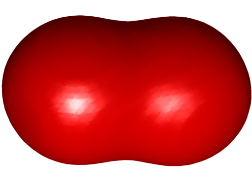
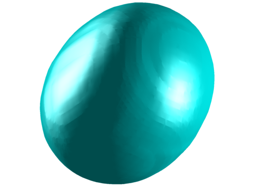
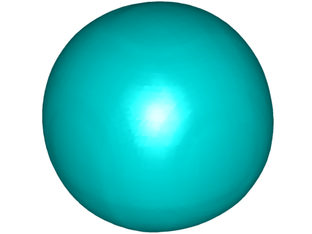
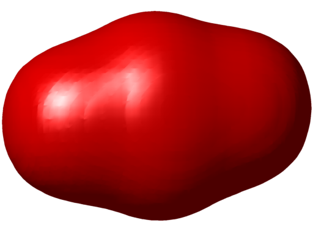
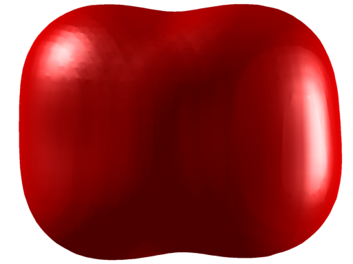
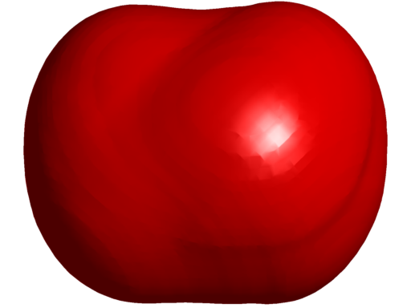
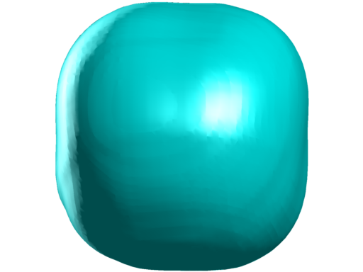
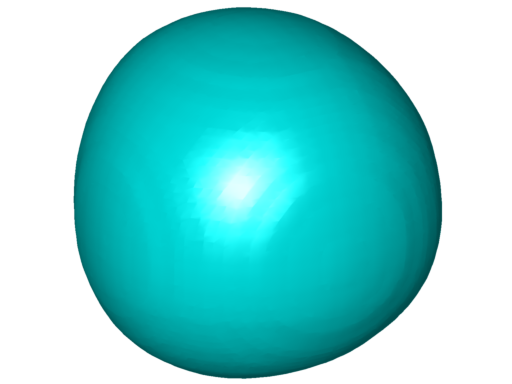
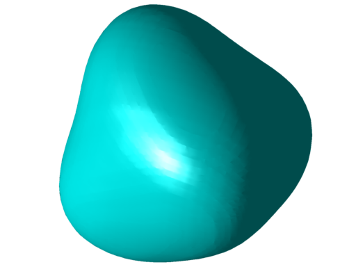

Beniamin BOGOSEL
A $\Gamma$- convergence method for the study of $\Omega \mapsto \lambda_k (\Omega)+Per(\Omega)$
The numerical optimizers for the problem $\lambda_k(\Omega)+Per(\Omega)$ presented here are obtained using a Fourier boundary parametrization method. Here I will present a new method which is suitable to finding the optimizers for the considered problem. Noting that we can approximate the perimeter by $\Gamma$-convergence, we can ask whether we can find a similar approximation for $\lambda_k+Per$
This work was motivated by two previous results. The first one, due to E. Oudet, presents an approximation by $\Gamma$-convergence of the sum of the perimeters of a partition. In this way, he is able to obtain in two dimensions the honeycomb tiling and in three dimensions, he obtains the configuration of Weaire and Phelan. This last configuration disproves Kelvin's conjectures about optimal partitions with respect to surface area in three dimensions. For more details see the following webpages: link1, link2. A second result, by D. Bucur, B. Bourdin and E. Oudet was the numerical study of a partitions which minimize the sum of the $k$-th eigenvalues of the Dirichlet Laplacian calculated on each set in the partition.
Our idea was to combine these two results in order to obtain a $\Gamma$-approximation for $\lambda_k+Per$. Using this $\Gamma$-convergence result, we perform numerical computations, which provide results which are very close to the Fourier boundary parametrizing method. Furthermore, this method can be immediately generalized in three dimensions. For more details you can consult the following article: Qualitative and numerical analysis of a spectral problem with perimeter constraint.
In two dimensions, our method gives the same optimal shapes as the Fourier boundary parametrization method presented here. In order to compare the quality of our results, we extracted the $0.5$ level set of the solutions we obtained with the $\Gamma$-convergence method, we found the corresponding Fourier boundary parametrization and we computed the value of the eigenvalue using Mpspack. We compared the values with the ones obtained by the Fourier parametrization method and we noticed that they are very close. They are presented in the table below.
| $k$ | mult. | $\Gamma$-conv | Fourier |
| $1$ | $1$ | $11.55$ | $11.55$ |
| $2$ | $1$ | $15.28$ | $15.28$ |
| $3$ | $2$ | $15.75$ | $15.73$ |
| $4$ | $2$ | $18.35$ | $18.35$ |
| $5$ | $2$ | $19.11$ | $19.11$ |
| $6$ | $1$ | $20.09$ | $20.09$ |
| $7$ | $2$ | $21.50$ | $21.50$ |
| $8$ | $2$ | $22.07$ | $22.02$ |
| $9$ | $1$ | $23.21$ | $23.21$ |
| $10$ | $2$ | $23.58$ | $23.55$ |
| $11$ | $2$ | $24.62$ | $24.60$ |
| $12$ | $3$ | $24.76$ | $24.74$ |
| $13$ | $1$ | $25.98$ | $25.98$ |
| $14$ | $2$ | $26.46$ | $26.43$ |
| $15$ | $1$ | $26.91$ | $26.91$ |
| $16$ | $3$ | $27.25$ | $27.27$ |
| $17$ | $3$ | $27.36$ | $27.37$ |
| $18$ | $3$ | $28.63$ | $28.66$ |
| $19$ | $2$ | $29.07$ | $29.09$ |
| $20$ | $3$ | $29.51$ | $29.54$ |
Below we present the results obtained in three dimensions using the $\Gamma$-convergence method. Red shapes have non-convex parts, while cyan shapes seem to be convex. Under each figure, a value of the scale invariant quantity $\lambda_k(\Omega)Per(\Omega)$ is calculated using a finite element method. Hold your mouse over the picture to see an animated view (it may take a while to load).
 |
 |
 |
$\lambda_2(\Omega)Per(\Omega) = 223.63$ multiplicity $1$ |
$\lambda_3(\Omega)Per(\Omega) = 252.48$ multiplicity $2$ |
$\lambda_4(\Omega)Per(\Omega) = 255.56$ multiplicity $3$ |
 |
 |
 |
$\lambda_5(\Omega)Per(\Omega) = 343.75$ multiplicity $2$ |
$\lambda_6(\Omega)Per(\Omega) = 394.77$ multiplicity $2$ |
$\lambda_7(\Omega)Per(\Omega) = 412.20$ multiplicity $2$ |
 |
 |
 |
$\lambda_{8} =439.80$ multiplicity $3$ |
$\lambda_{9} =446.58$ multiplicity $3$ |
$\lambda_{10} =510.00$ multiplicity $1$ |
← Back to numerical computations
Created: Dec 2014, Last modified: 10 Feb 2015